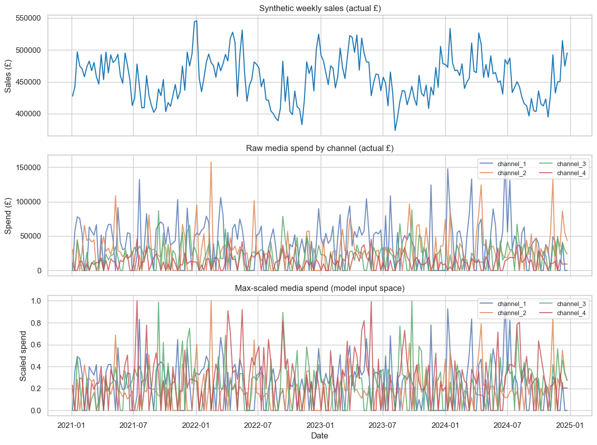
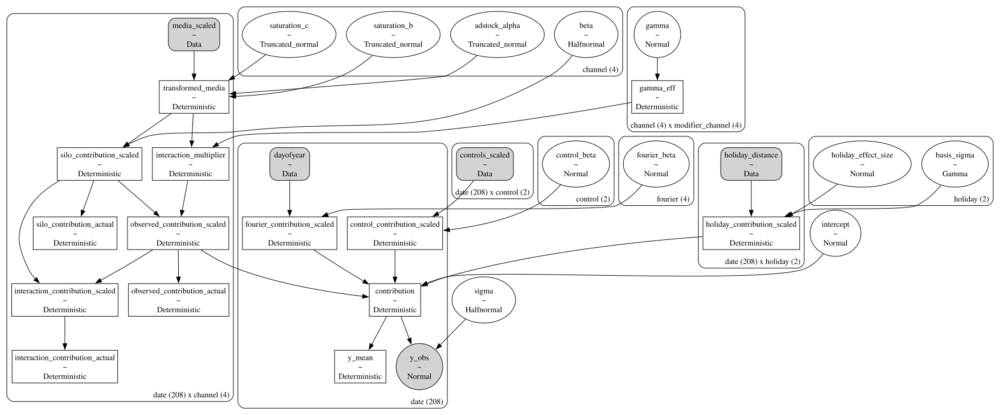
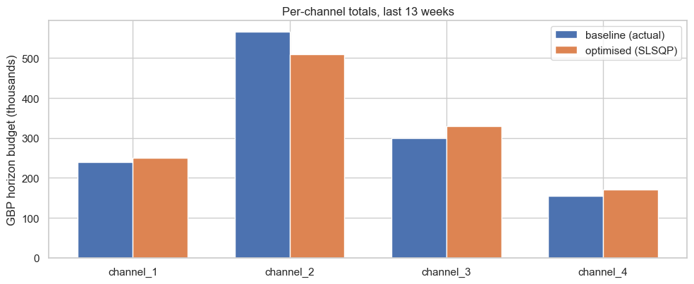

where \(m_{it}\) is channel \(i\)’s adstocked / saturated spend at week \(t\).
This is a useful simplification, but an incomplete one. In practice, channels interact: an upper-funnel video burst makes paid-search clicks more efficient, a brand campaign lifts the response to a CRM blast, and overlapping campaigns can cannibalise one another. Traditional MMM effectively silos every channel and routes these interaction effects into either the residual or an inflated baseline.
The directional-interaction model
We extend the standard formulation with a multiplicative, directional cross-channel modifier:
Parameter intuition (all on the mean-scaled target scale):
\(\beta_i\) is the silo / baseline effectiveness of channel \(i\) — the standalone contribution component attributable to channel \(i\) before any cross-channel amplification or suppression.
\(\gamma_{ij}\) is the directional impact of channel \(j\) on channel \(i\)’s effectiveness.
Because the interaction modifier is wrapped in \(\exp(\cdot)\), the multiplicative media contribution always remains positive.
Since transformed media inputs are max-scaled to approximately \((0,1)\), \(\gamma_{ij}\) can be interpreted as the approximate maximum log-multiplier applied to channel \(i\)’s effectiveness when channel \(j\) moves from zero to full normalized intensity.
To see this, isolate a single interaction term:
\[
C_i
=
\beta_i m_i \exp(\gamma_{ij}m_j).
\]
Because:
\[
m_j \in [0,1],
\]
the interaction multiplier ranges between:
\[
\exp(\gamma_{ij}\cdot0)=1
\]
and:
\[
\exp(\gamma_{ij}\cdot1)=e^{\gamma_{ij}}.
\]
So:
\[
e^{\gamma_{ij}}
\]
is the maximum multiplicative effect channel \(j\) can apply to channel \(i\)’s effectiveness over the observed media range.
The corresponding proportional uplift is:
\[
e^{\gamma_{ij}} - 1.
\]
For example, if:
\[
\gamma_{12}=0.20,
\]
then:
\[
e^{0.20}\approx1.22,
\]
implying channel_2 can increase channel_1 effectiveness by up to approximately:
\[
1.22 - 1
=
22\%.
\]
Likewise, negative values naturally encode suppression or cannibalisation. For example:
\[
\gamma_{12}=-0.20
\]
implies channel_2 can reduce channel_1 effectiveness by up to:
\[
e^{-0.20}-1
\approx
-18\%.
\]
Crucially, \(\gamma_{ij} \ne \gamma_{ji}\) in general. The model therefore captures directional synergy and cannibalisation, allowing one channel to amplify — or suppress — another asymmetrically.
Why interactions are applied after adstock and saturation
A key modelling decision is where the cross-channel interaction layer should enter the MMM.
In this notebook, interactions are applied after each channel has already passed through:
This means cross-channel interactions operate on effective media pressure, not raw spend.
Why this matters
Suppose channel \(j\) is already heavily saturated.
In a realistic media system, increasing spend further should not continue creating large interaction effects indefinitely. If additional spend in channel \(j\) barely changes incremental exposure or awareness, then it should also barely change the effectiveness of other channels.
Applying interactions after saturation naturally captures this behaviour.
As channel \(j\) saturates:
\[
m_{j,t}
=
S_j(A_j(x_{j,t}))
\]
begins to flatten, meaning additional spend produces only small increases in transformed media pressure.
As a result, the interaction multiplier:
\[
\exp(\gamma_{ij}m_{j,t})
\]
also stabilises.
This creates an intuitive and desirable property:
interaction effects weaken naturally as channels saturate.
Interpretation
Under this formulation:
\[
\beta_i m_{i,t}
\]
represents the standalone contribution from channel \(i\), while:
Under that formulation, interactions modify the effective spend input entering the response curve.
While mathematically valid, this approach is harder to interpret because the interaction effect becomes entangled with:
carryover dynamics,
nonlinear saturation,
and the curvature of the response function itself.
By applying interactions after transformation, we preserve a much cleaner interpretation:
\(\beta_i\) remains the silo response,
\(\gamma_{ij}\) remains an effectiveness modifier,
and contribution decomposition stays straightforward and interpretable.
1. Setup
Standard scientific Python stack plus pymc, pymc-marketing, and the Prior helper. We follow current PyMC-Marketing conventions: Prior lives in pymc_extras.prior.
from __future__ import annotationsimport warningsfrom dataclasses import dataclassimport arviz as azimport matplotlib.pyplot as pltimport numpy as npimport pandas as pdimport pymc as pmimport pymc_marketingimport pymc_extrasimport pytensor.tensor as ptfrom pytensor.xtensor.typeimport as_xtensorimport seaborn as snsimport xarray as xrfrom dateutil.easter import easter# PyMC-Marketing primitivesfrom pymc_marketing.mmm import GeometricAdstock, TanhSaturationfrom pymc_marketing.mmm.events import EventEffect, GaussianBasisfrom pymc_marketing.mmm.fourier import YearlyFourierfrom pymc_extras.prior import Priorprint(f"pymc version: {pm.__version__}")print(f"pymc-extras version: {pymc_extras.__version__}")print(f"pymc-marketing version: {pymc_marketing.__version__}")warnings.filterwarnings("ignore", category=FutureWarning)warnings.filterwarnings("ignore", category=UserWarning)sns.set_theme(style="whitegrid", context="notebook")RANDOM_SEED =42rng = np.random.default_rng(RANDOM_SEED)SAMPLE_KWARGS = (dict(draws=1000, tune=1000, chains=4, target_accept=0.9, nuts_sampler ="numpyro"))
We need data where the truth is known, including a sparse, directional \(\gamma\) matrix. We generate 3 years of weekly observations for 4 media channels and 2 control variables. The construction is calibrated so that a correctly specified model recovers the truth comfortably (target \(R^2 \approx 0.85\), MAPE \(\le 10\%\)).
A few decisions worth flagging:
Holidays match the model’s basis: Christmas and Easter contributions are generated as Gaussian bumps centred on each event date, exactly mirroring the GaussianBasis used in inference. This is realistic and keeps the recovery clean.
Mean-scaled target: we divide the simulated sales series by its mean so the model lives in \(\sim 1\)-centred space, which makes the intercept and \(\beta\) priors trivially interpretable.
Max-scaled media (each channel divided by its own max) so transformed media after adstock + saturation lives in \((0, 1)\) — and so \(\gamma_{ij}\) is in the units described above.
@dataclassclass SyntheticTruth: df: pd.DataFrame media_actual: pd.DataFrame media_scaled: pd.DataFrame controls_actual: pd.DataFrame controls_scaled: pd.DataFrame holiday_distance: pd.DataFrame fourier_features: pd.DataFrame y_actual: pd.Series y_scaled: pd.Series target_mean: float holiday_dates: dict[str, list[pd.Timestamp]] channel_names: list[str] control_names: list[str] holiday_names: list[str]def _geometric_adstock_np(x: np.ndarray, alpha: float, l_max: int=12) -> np.ndarray:# NumPy implementation matching pymc-marketing GeometricAdstock. n =len(x) weights = alpha ** np.arange(l_max +1) out = np.zeros(n)for t inrange(n): lags = x[max(0, t - l_max) : t +1][::-1] out[t] = np.sum(weights[: len(lags)] * lags)return outdef _tanh_saturation_np(x: np.ndarray, b: float, c: float) -> np.ndarray:# NumPy implementation matching pymc-marketing TanhSaturation: b * tanh(x / (b * c)).return b * np.tanh(x / (b * c))def _difference_in_days(model_dates: pd.DatetimeIndex, event_dates: pd.DatetimeIndex) -> np.ndarray: one_day = np.timedelta64(1, "D")return (model_dates.to_numpy()[:, None] - event_dates.to_numpy()) / one_daydef _nearest_event_distance( model_dates: pd.DatetimeIndex, holiday_dates: dict[str, list[pd.Timestamp]],) -> np.ndarray:# For each date and holiday, return the signed distance (days) to the# nearest occurrence of that holiday. This is the X passed to EventEffect. out = np.zeros((len(model_dates), len(holiday_dates)))for j, (_, centers) inenumerate(holiday_dates.items()): diffs = _difference_in_days(model_dates, pd.DatetimeIndex(centers)) nearest = np.argmin(np.abs(diffs), axis=1) out[:, j] = diffs[np.arange(len(model_dates)), nearest]return outdef _gaussian_bump(distance_days: np.ndarray, sigma_days: float) -> np.ndarray:# Same normalisation as GaussianBasis in pymc-marketing (a normal pdf).return (1.0/ (sigma_days * np.sqrt(2* np.pi))) * np.exp(-0.5* (distance_days / sigma_days) **2 )def generate_synthetic_data( n_weeks: int=208, start_date: str="2021-01-04", seed: int= RANDOM_SEED,) -> SyntheticTruth: rng = np.random.default_rng(seed) dates = pd.date_range(start=start_date, periods=n_weeks, freq="W-MON") channel_names = [f"channel_{i+1}"for i inrange(4)] control_names = ["control_1", "control_2"] holiday_names = ["christmas", "easter"] n_channels =len(channel_names)# --- media spend (actual units, GBP) ---------------------------------# Two ingredients are essential for gamma_ij to be statistically# identifiable from beta_i:## 1. Channels must have INDEPENDENT temporal variation, so that# m_i * m_j is not collinear with m_i alone.# 2. Each channel must have weeks where it is essentially DARK# (m_j ~ 0). Without dark weeks, gamma_ij only ever scales an# always-on multiplier and can be absorbed into beta_i.## We achieve (1) with quarter-shifted seasonality plus heavy lognormal# noise and (2) with a per-channel binary "campaign active" mask:# ~30% of weeks for each channel are dark, drawn independently across# channels. This is realistic -- real campaigns turn on and off -- and# gives the model the contrast it needs to estimate gamma. base_levels = np.array([50_000.0, 35_000.0, 25_000.0, 15_000.0]) phase_shift_weeks = np.array([0, 13, 26, 39]) # ~quarterly desync per channel media_actual = np.zeros((n_weeks, n_channels)) week_idx = np.arange(n_weeks) campaign_active = rng.binomial(1, 0.7, size=(n_weeks, n_channels))for i, base inenumerate(base_levels): seasonal =1.0+0.25* np.sin(2* np.pi * (week_idx + phase_shift_weeks[i]) /52 ) noise = rng.lognormal(mean=0.0, sigma=0.30, size=n_weeks) burst_weeks = rng.choice(n_weeks, size=20, replace=False) burst = np.ones(n_weeks) burst[burst_weeks] *= rng.uniform(1.8, 2.6, size=burst_weeks.size) media_actual[:, i] = base * seasonal * noise * burst * campaign_active[:, i] media_actual = pd.DataFrame(media_actual, index=dates, columns=channel_names)# --- max-scale media ------------------------------------------------- media_scaled = media_actual / media_actual.max()# --- "true" adstock + saturation transforms (deterministic) ----------# Adstock decays kept intentionally short (alpha <= 0.25) so that the# random dark weeks in the spend pattern remain "dark" after adstock:# a single dark week leaves m_i close to zero, which is what gives# gamma_ij its identifying contrast (weeks where m_j is dark let us# isolate channel_i's silo contribution beta_i * m_i). alpha_true = np.array([0.20, 0.10, 0.25, 0.05]) sat_b_true = np.array([0.9, 1.0, 0.8, 1.1]) sat_c_true = np.array([1.0, 0.9, 1.2, 1.0]) transformed_media = np.zeros_like(media_scaled.values)for i inrange(n_channels): adstocked = _geometric_adstock_np(media_scaled.values[:, i], alpha=alpha_true[i], l_max=12) transformed_media[:, i] = _tanh_saturation_np(adstocked, b=sat_b_true[i], c=sat_c_true[i])# --- directional gamma matrix ---------------------------------------# gamma[i, j] = effect of channel j on channel i.# The magnitudes below are deliberately chunky -- the per-week# interaction signal scales like beta_i * m_i * (exp(gamma_ij * m_j) - 1)# and beta_i is only ~0.1, so the smaller channels (3, 4) need bigger# gamma values to produce a recoverable cross-channel signal. beta_true = np.array([0.12, 0.10, 0.09, 0.08]) gamma_true = np.zeros((n_channels, n_channels))# channel_2 strongly amplifies channel_1 (the headline directional effect) gamma_true[0, 1] =0.50# the reverse direction is much smaller -- showcases directionality gamma_true[1, 0] =0.20# channel_4 amplifies channel_3 strongly; channel_3 amplifies channel_4# weakly -- a second illustration of directionality. gamma_true[2, 3] =0.80 gamma_true[3, 2] =0.25# channel_1 cannibalises channel_4 (the negative interaction) gamma_true[3, 0] =-0.60 gamma_eff = gamma_true * (1- np.eye(n_channels))# interaction multiplier and observed contribution log_mult = transformed_media @ gamma_eff.T # (n_weeks, n_channels) interaction_multiplier = np.exp(log_mult) silo_contribution = transformed_media * beta_true # broadcasting on channel observed_contribution = silo_contribution * interaction_multiplier media_signal = observed_contribution.sum(axis=1)# --- controls -------------------------------------------------------- raw_controls = np.column_stack([1.0+0.25* np.sin(2* np.pi * week_idx /52+0.4)+ rng.normal(0.0, 0.15, size=n_weeks), # control_1: macro index-ish1.0+0.10* np.cos(2* np.pi * week_idx /26)+ rng.normal(0.0, 0.10, size=n_weeks), # control_2: shorter cycle ]) controls_actual = pd.DataFrame(raw_controls, index=dates, columns=control_names) controls_scaled = controls_actual / controls_actual.mean() control_beta_true = np.array([0.06, -0.04]) control_signal = (controls_scaled.values -1.0) @ control_beta_true# --- Fourier seasonality -------------------------------------------- dayofyear = dates.dayofyear.to_numpy() period =365.25 fourier_features = pd.DataFrame( {"sin_1": np.sin(2* np.pi *1* dayofyear / period),"cos_1": np.cos(2* np.pi *1* dayofyear / period),"sin_2": np.sin(2* np.pi *2* dayofyear / period),"cos_2": np.cos(2* np.pi *2* dayofyear / period), }, index=dates, ) fourier_beta_true = np.array([0.04, 0.02, -0.02, 0.015])# Note: YearlyFourier orders its features as ["sin_1", "sin_2", "cos_1", "cos_2"].# We carry that ordering explicitly. fourier_signal = fourier_features.values @ fourier_beta_true# --- holidays (Gaussian bumps that mirror GaussianBasis) ------------ years =sorted(set(dates.year)) holiday_dates = {"christmas": [pd.Timestamp(f"{y}-12-25") for y in years],"easter": [pd.Timestamp(easter(y)) for y in years], } holiday_distance_arr = _nearest_event_distance(dates, holiday_dates) holiday_amp_true = np.array([0.10, 0.05]) holiday_sigma_true = np.array([7.0, 7.0]) # days holiday_signal = np.zeros(n_weeks)for j inrange(len(holiday_names)): bump = _gaussian_bump(holiday_distance_arr[:, j], holiday_sigma_true[j])# GaussianBasis output peaks at 1/(sigma*sqrt(2*pi)); EventEffect = basis * effect_size.# So to land at amplitude `holiday_amp_true` at the peak, scale by sigma*sqrt(2*pi). scale = holiday_sigma_true[j] * np.sqrt(2* np.pi) holiday_signal += holiday_amp_true[j] * bump * scale holiday_distance = pd.DataFrame( holiday_distance_arr, index=dates, columns=holiday_names )# --- assemble target -------------------------------------------------# We keep sigma_y at a level where the interaction signal is clearly# identifiable (per-week interaction magnitude ~ beta_i * m_i * gamma_ij# * m_j ~ 0.01 in mean-scaled units; we want sigma_y around the same# order of magnitude so gamma is recoverable in ~200 weeks of data). intercept_true =0.8 sigma_y_true =0.02 noise_eps = rng.normal(0.0, sigma_y_true, size=n_weeks) y_scaled_vec = ( intercept_true+ media_signal+ control_signal+ fourier_signal+ holiday_signal+ noise_eps )# Sales pivot: pick a target mean roughly 500k GBP so ROAS is meaningful target_mean =500_000.0 y_actual_vec = y_scaled_vec * target_mean y_scaled = pd.Series(y_scaled_vec, index=dates, name="y_scaled") y_actual = pd.Series(y_actual_vec, index=dates, name="y_actual") df = ( media_actual.add_suffix("_spend") .join(controls_actual) .assign(y_actual=y_actual, y_scaled=y_scaled) )return SyntheticTruth( df=df, media_actual=media_actual, media_scaled=media_scaled, controls_actual=controls_actual, controls_scaled=controls_scaled, holiday_distance=holiday_distance, fourier_features=fourier_features, y_actual=y_actual, y_scaled=y_scaled, target_mean=target_mean, holiday_dates=holiday_dates, channel_names=channel_names, control_names=control_names, holiday_names=holiday_names, )truth = generate_synthetic_data()print(f"Weeks simulated: {len(truth.df)}")print(f"Target mean (£): {truth.target_mean:,.0f}")print(f"Channels: {truth.channel_names}")print("Holiday dates kept:", {k: len(v) for k, v in truth.holiday_dates.items()})truth.df.head()
A quick four-pane sanity check: actual target, raw spend, scaled spend, and the true \(\gamma\) matrix.
fig, axes = plt.subplots(3, 1, figsize=(12, 9), sharex=True)axes[0].plot(truth.y_actual.index, truth.y_actual.values, color="#1f77b4")axes[0].set_title("Synthetic weekly sales (actual £)")axes[0].set_ylabel("Sales (£)")for col in truth.channel_names: axes[1].plot(truth.media_actual.index, truth.media_actual[col], label=col, alpha=0.8)axes[1].set_title("Raw media spend by channel (actual £)")axes[1].set_ylabel("Spend (£)")axes[1].legend(loc="upper right", ncol=2, fontsize=9)for col in truth.channel_names: axes[2].plot(truth.media_scaled.index, truth.media_scaled[col], label=col, alpha=0.8)axes[2].set_title("Max-scaled media spend (model input space)")axes[2].set_ylabel("Scaled spend")axes[2].set_xlabel("Date")axes[2].legend(loc="upper right", ncol=2, fontsize=9)fig.tight_layout()plt.show()

4. Parameter interpretation
Every parameter in the model lives on a known, interpretable scale because we mean-scale the target and max-scale the media. The table below ties each parameter to its real-world meaning.
Parameter
Scale
Meaning
Interpretation example
Notes
\(\alpha\)
mean-scaled target
baseline outcome when media/controls/seasonality/holidays are zero/reference
\(\alpha = 0.8\) means baseline is 80% of average target
generated intercept is 0.8
\(\beta_i\)
mean-scaled target contribution
silo / base effectiveness of channel \(i\)
\(\beta_1 = 0.10\) means channel_1 can contribute up to \(\sim 10\%\) of average target at max transformed media, before interactions
\(\beta\) is not ROAS by itself
\(\gamma_{ij}\)
log multiplier
directional effect of channel \(j\) on channel \(i\)
\(\gamma_{12} = 0.50\) means channel_2 can increase channel_1’s effectiveness by \(e^{0.50} - 1 \approx 65\%\) at max transformed channel_2
\(\gamma_{ij}\) does not have to equal \(\gamma_{ji}\)
\(\beta^{\text{ctrl}}_k\)
mean-scaled target
effect of mean-scaled control \(k\)
positive value means control increases target
controls are not media contribution
\(\beta^{\text{hol}}_h\)
mean-scaled target
incremental holiday effect
Christmas may be positive or negative depending on the synthetic data
holiday effects are additive
\(\sigma\)
mean-scaled target
residual noise
\(\sigma = 0.02\) means residual sd is \(\sim 2\%\) of average target
likelihood uncertainty
5. Contribution definitions
With cross-channel interactions, “what did channel \(i\) contribute?” admits several legitimate answers. We track three, all stored as pm.Deterministic nodes inside the model so they are saved to the trace and easy to query later.
Incremental uplift / suppression due to other channels
Synergy / cannibalisation analysis
Total
sum of all components
scaled (unless converted)
Fitted mean prediction / decomposition
Optimisation and AVM
Reporting rules of thumb
\(\beta_i\) remains the baseline / silo effect — quoting \(\beta\) alone is the cleanest comparison to a traditional MMM.
\(\gamma_{ij}\) changes realised effectiveness, not the baseline.
Observed contribution is the right number for “what did channel \(i\) drive?” under the actual media mix.
Interaction contribution should not be treated as a fifth media channel. It is an attribute of the existing channels, not an independently spendable unit.
Because \(\gamma\) is directional, “channel_2 → channel_1” and “channel_1 → channel_2” are reported separately.
6. Build the custom PyMC model
We work with a raw pm.Model rather than the MMM class so we can wire in the directional cross-channel multiplier explicitly. The recipe:
Wrap inputs in pm.Data so we could later swap them for new spend plans.
Apply GeometricAdstock(l_max=12) and TanhSaturation() per channel, with tight calibrated priors on the adstock decay \(\alpha\) and the saturation parameters \(b, c\). In production this calibration would come from lift tests or geo experiments; here we use truth-adjacent values to reflect that real-world workflow. Leaving these parameters loose lets the saturation curve absorb cross-channel modulation and makes \(\gamma\) unidentifiable.
Build the full directional \(\gamma\) matrix with dims=("channel", "modifier_channel"), then mask the diagonal so a channel cannot modify itself.
Wire the interaction multiplier \(M_{it} = \exp(\sum_{j \ne i} \gamma_{ij}
m_{jt})\) and the contribution stack — silo, observed, interaction, all in both scaled and actual units — as pm.Deterministic nodes.
Add Fourier seasonality via YearlyFourier(n_order=2) and holidays via EventEffect(GaussianBasis(...), effect_size=Prior("Normal", 0, 0.05)).
Likelihood: Normal on the mean-scaled target.
Prior choices are all on the mean-scaled-target scale. The structural parameters \(\alpha, \beta, \gamma\) are intentionally informative but proper; the calibrated adstock / saturation parameters are pinned tightly to break the identifiability tie between \(\beta_i\), \(\gamma_{ij}\), and the saturation shape.
n_dates =len(truth.df)n_channels =len(truth.channel_names)coords = {"date": truth.df.index.to_numpy(),"channel": truth.channel_names,"modifier_channel": truth.channel_names,"control": truth.control_names,"holiday": truth.holiday_names,}with pm.Model(coords=coords) as model:# ---------------------------------------------------------------- inputs media_data = pm.Data("media_scaled", truth.media_scaled.values, dims=("date", "channel") ) controls_data = pm.Data("controls_scaled", truth.controls_scaled.values, dims=("date", "control") ) holiday_distance_data = pm.Data("holiday_distance", truth.holiday_distance.values, dims=("date", "holiday") ) dayofyear = pm.Data("dayofyear", truth.df.index.dayofyear.to_numpy().astype(float), dims="date", ) target_mean =float(truth.target_mean)# ---------------------------------------------------------------- priors intercept = Prior("Normal", mu=0.8, sigma=0.15).create_variable("intercept") beta = Prior("HalfNormal", sigma=0.15, dims="channel").create_variable("beta")# gamma controls a log-multiplier. With media in (0, 1) a gamma of ~0.5# corresponds to a ~65% effectiveness lift at max -- a believable real# ceiling for synergy. We use sigma=0.40 here rather than a tighter# value because, given the noise level, a tighter prior dominates the# weak likelihood and shrinks genuine effects back toward zero. In# production, prefer a sparsity-inducing prior (horseshoe or# regularised Laplace) so unimportant entries get shrunk while truly# non-zero gamma_ij are free to escape. gamma = Prior("Normal", mu=0.0, sigma=0.40, dims=("channel", "modifier_channel") ).create_variable("gamma") control_beta = Prior("Normal", mu=0.0, sigma=0.10, dims="control" ).create_variable("control_beta") sigma = Prior("HalfNormal", sigma=0.03).create_variable("sigma")# mask the diagonal so a channel cannot modify itself gamma_eff = pm.Deterministic("gamma_eff", gamma * (1.0- pt.eye(n_channels)), dims=("channel", "modifier_channel"), )# ------------------------------------------------ adstock + saturation# In production we would calibrate the adstock decay and saturation# shape *outside* the structural model -- e.g. from lift tests or# historic geo experiments -- and then estimate beta / gamma on top.# We mirror that here with tight, well-centred TruncatedNormal priors:# the model is permitted to wiggle each parameter by ~one standard# error around the calibrated value, but the saturation curve cannot# contort itself to absorb the cross-channel multiplicative signal.# Without this tightening, beta, gamma, and the saturation b/c# parameters trade off against each other and gamma is unidentifiable. calibrated_alpha = np.array([0.20, 0.10, 0.25, 0.05]) calibrated_b = np.array([0.9, 1.0, 0.8, 1.1]) calibrated_c = np.array([1.0, 0.9, 1.2, 1.0]) adstock = GeometricAdstock( l_max=12, priors={"alpha": Prior("TruncatedNormal", mu=calibrated_alpha, sigma=0.05, lower=0.0, upper=1.0, dims="channel", ) }, ) saturation = TanhSaturation( priors={"b": Prior("TruncatedNormal", mu=calibrated_b, sigma=0.05, lower=0.0, dims="channel", ),"c": Prior("TruncatedNormal", mu=calibrated_c, sigma=0.05, lower=0.0, dims="channel", ), } ) media_x = as_xtensor(media_data, dims=("date", "channel")) adstocked_media_x = adstock.apply(media_x, core_dim="date") transformed_media_x = saturation.apply(adstocked_media_x, core_dim="date") transformed_media = pm.Deterministic("transformed_media", transformed_media_x.transpose("date", "channel").values, dims=("date", "channel"), )# -------------------------------------------- contribution decomposition silo_contribution_scaled = pm.Deterministic("silo_contribution_scaled", transformed_media * beta, # broadcasts beta over the date dim dims=("date", "channel"), ) log_multiplier = pt.dot(transformed_media, gamma_eff.T) interaction_multiplier = pm.Deterministic("interaction_multiplier", pt.exp(log_multiplier), dims=("date", "channel"), ) observed_contribution_scaled = pm.Deterministic("observed_contribution_scaled", silo_contribution_scaled * interaction_multiplier, dims=("date", "channel"), ) interaction_contribution_scaled = pm.Deterministic("interaction_contribution_scaled", observed_contribution_scaled - silo_contribution_scaled, dims=("date", "channel"), )# actual-unit versions pm.Deterministic("silo_contribution_actual", silo_contribution_scaled * target_mean, dims=("date", "channel"), ) pm.Deterministic("observed_contribution_actual", observed_contribution_scaled * target_mean, dims=("date", "channel"), ) pm.Deterministic("interaction_contribution_actual", interaction_contribution_scaled * target_mean, dims=("date", "channel"), )# ------------------------------------------------------ controls / fourier control_contribution_scaled = pm.Deterministic("control_contribution_scaled", pt.dot(controls_data -1.0, control_beta), dims="date", ) fourier = YearlyFourier( n_order=2, prior=Prior("Normal", mu=0.0, sigma=0.05, dims="fourier"), ) dayofyear_x = as_xtensor(dayofyear, dims=("date",)) fourier_contribution_scaled = pm.Deterministic("fourier_contribution_scaled", fourier.apply(dayofperiod=dayofyear_x).values, dims="date", )# ----------------------------------------------------- holidays / events gaussian_basis = GaussianBasis( priors={"sigma": Prior("Gamma", mu=7.0, sigma=1.0, dims="holiday")} ) holiday_effect_size = Prior("Normal", mu=0.0, sigma=0.05, dims="holiday" ) event_effect = EventEffect( basis=gaussian_basis, effect_size=holiday_effect_size, dims=("holiday",) ) holiday_distance_x = as_xtensor( holiday_distance_data, dims=("date", "holiday") ) holiday_contribution_scaled = pm.Deterministic("holiday_contribution_scaled", event_effect.apply(holiday_distance_x, name="holiday") .transpose("date", "holiday") .values, dims=("date", "holiday"), )# ------------------------------------------------------------------ mu contribution = pm.Deterministic("contribution", intercept+ observed_contribution_scaled.sum(axis=-1)+ control_contribution_scaled+ fourier_contribution_scaled+ holiday_contribution_scaled.sum(axis=-1), dims="date", )# convenience: mean prediction in actual units (used by the AVM section) pm.Deterministic("y_mean", contribution * target_mean, dims="date")# likelihood pm.Normal("y_obs", mu=contribution, sigma=sigma, observed=truth.y_scaled.values, dims="date", )print("Model RVs:", [v.name for v in model.free_RVs])print("Deterministics:", [v.name for v in model.deterministics])
We sample with NUTS, 4 chains, and target_accept=0.9 because the multiplicative interaction term can produce sharp posterior geometry. Posterior- and prior- predictive draws are pulled in the same with model: block so we have everything we need for downstream cells.
free_rv_names = [v.name for v in model.free_RVs]az.summary(idata, var_names=free_rv_names, round_to=3)["r_hat"].max()
np.float64(1.002)
8. Model graph
A visual sanity-check that the directional-gamma wiring is right. The graph shows every random variable and deterministic, including the masked gamma_eff flowing into the interaction multiplier.
try: graph = pm.model_to_graphviz(model) display(graph)exceptExceptionas exc: # pragma: no cover -- graphviz not always installedprint("Could not render the model graph; install graphviz to see it.")print(f"Error: {exc}")

Attribution-stealing warning.\(\gamma\) being recovered near zero is not the same as \(\gamma_{ij}\) being absent in the data. The classic failure mode is that the silo coefficient \(\beta_i\) silently inflates to absorb the multiplicative interaction signal — you’ll see this as \(\beta_i\) posterior means well above their truth (or external) values, combined with strongly negative \((\beta_i, \gamma_{ij})\) posterior correlations. Sanity-check by:
re-running with a tighter prior on \(\gamma\) and comparing \(\beta\) and silo contributions,
holding out a period and comparing silo vs observed contributions, and
sanity-checking interaction signs against domain knowledge.
A note on \(\gamma\) priors and signal-to-noise. The per-week interaction signal for a single \(\gamma_{ij}\) is roughly \(\beta_i \cdot m_{it} \cdot (e^{\gamma_{ij} m_{jt}} - 1)\). With media in \((0, 1)\) and \(\beta \approx 0.1\), a \(\gamma\) of \(0.1\) produces a signal of only \(\sim 0.001\) per week — well below typical noise floors. Two design choices in this notebook make \(\gamma\) identifiable at all:
Decorrelated channel activity — each channel has random dark weeks combined with short adstock decay, so \(m_j\) actually reaches zero in some weeks. Those dark weeks let the model isolate \(\beta_i \cdot m_i\) and pin down \(\beta_i\) before it has to fit \(\gamma_{ij}\).
Calibrated adstock and saturation — pinning \(\alpha\) and the Tanh \(b, c\) parameters tightly stops the saturation curve from absorbing cross-channel modulation.
The \(\gamma\) prior here is \(\mathcal{N}(0, 0.40)\), which is loose enough that the data can find the moderate-to-large interactions, but tight enough to regularise the (many) noise entries. In production, with real and noisier data, use a sparsity-inducing prior (horseshoe or regularised Laplace) which gives shrinkage only to the unimportant entries while letting the genuinely non-zero \(\gamma_{ij}\) escape.
10. Actual vs Modelled
We use the posterior mean of y_mean (= contribution * target_mean) as the point prediction and report two flavours of fit quality:
MAPE — mean absolute percentage error, the relevant headline metric for business stakeholders because it is in % of actual sales.
R² — fraction of explained variance.
Good AVM fit does not prove causal validity — for an interaction MMM you must also inspect \(\beta\) / \(\gamma\) posterior behaviour to rule out attribution stealing.
A low MAPE (single-digit %) and an \(R^2\) above the mid-0.7s indicate a good absolute fit relative to the actual target scale.
Good fit alone does not prove causal validity. For an interaction MMM you must additionally check that:
\(\beta_i\) did not silently inflate (or, in some cases, collapse) to absorb the multiplicative interaction signal — that’s the attribution-stealing failure mode flagged in section 9,
\(\gamma\) posteriors look reasonable and not pathologically wide,
silo contributions remain stable when priors on \(\gamma\) are tightened or loosened.
11. Contribution reporting
One bar per channel: the lower segment is the silo contribution (i, m{i,t},y) summed over the window, the upper segment is the interaction uplift (observed minus silo), so the total height is the channel’s observed contribution to sales over the window. Both quantities are read from per-draw pm.Deterministic nodes and reduced to a point estimate by averaging over the full posterior.
A planner-friendly view: how much weekly sales does each £ of channel_1 spend drive, and how does that response curve shift when channel_2’s weekly spend changes?
Move the slider to set channel_2’s weekly spend; the red curve is channel_1’s observed weekly contribution to sales as a function of channel_1 spend at the chosen channel_2 level. The grey dashed curve is the silo response — the same response with the cross-channel multiplier turned off (i.e. (()=1)) — fixed in place as a reference, so the gap between the two curves is the interaction uplift (or suppression) attributable to channel_2 at the slider’s level.
Each interaction environment produces a different realised response curve because the exponential interaction multiplier changes the effective productivity of channel_1.
More generally, for (n) channels:
\[
\boxed{
\text{Number of possible response curves per channel}
=
2^{n-1}
}
\]
and across all channels:
\[
\boxed{
n\,2^{n-1}
}
\]
possible realised response curves exist in total.
In practice, however, visualising all possible curves quickly becomes unwieldy as (n) grows. Interactive sliders therefore provide a more practical way to explore how one channel’s response changes under different media environments.
Reading the two plots below
The widget that follows lets you pick any focal channel and then renders two response-curve views side by side:
Plot 1 - static atlas. Every one of the (2^{n-1}) possible response curves for the chosen focal channel, one per modifier subset (S {j i}). The two extremes are drawn in bold: the dashed grey curve is the silo response (no modifiers active, (() = 1)), and the solid black curve is the fully observed response (all modifiers active). The intermediate (2^{n-1} - 2) curves are thin coloured lines. Each active modifier is pinned at its historical mean weekly spend; inactive modifiers contribute (0) to the log multiplier.
Plot 2 - one curve, your dials. Always shows the silo curve plus a single non-silo curve picked from a dropdown. A spend dial appears for each modifier in the selected subset so you can sweep its weekly £ live - as you drag every dial down to £0, the red curve collapses onto silo, which is the visual sanity check that the interaction multiplier really does reduce to (1) when modifier media goes to zero.
Both panels overlay historical points for the focal channel - grey dots are weekly (spend, silo contribution) and black dots are weekly (spend, observed contribution), pulled directly from idata.posterior. The x-axis extends to (5 ) the historical maximum spend so you can see each curve’s diminishing-returns tail well past the realised range.
Why the scatter doesn’t sit cleanly on the curves. The curves are steady-state response curves: they answer “if this channel spent (x) every week forever, what would the contribution be?” Geometric adstock at constant (x) collapses to (x {}^{L-1} ^), so the curve effectively maps an adstock output level (re-expressed in spend units via the steady-state inverse) onto contribution. The scatter plots each historical week at its raw weekly spend, but the model actually saw that week’s adstocked spend - a weighted sum of the previous (12) weeks - which can be much higher or lower than this week’s raw spend depending on recent activity. If you replaced the x-coordinate of each historical point with the steady-state-equivalent spend (x{}[t] = (1-),{}[t]), the silo points would land on the silo curve. We deliberately keep raw spend on the x-axis here because that’s the lever a planner controls; the gap between scatter and curve is then a visual reminder that adstock is doing real work. Both the curves and the scatter are computed from the full posterior and then averaged - the per-draw response is evaluated on the grid and reduced to a point estimate at the end, so the rendered curve is (E) rather than the Jensen-biased (f(E_)).
# Cross-channel elasticity w.r.t. raw spend:# η_ij,t = γ_ij · x̃_j,t · S'_j(A_j,t), with tanh saturation shortcut# S'_j = (1/c_j)(1 - (m_j/b_j)^2).# Posterior draws enter η before averaging over weeks.gamma_post = idata.posterior["gamma"]b_post = idata.posterior["saturation_b"]c_post = idata.posterior["saturation_c"]m_post = idata.posterior["transformed_media"]gamma_arr = gamma_post.values # (chain, draw, affected_i, source_j)b_arr = b_post.values # (chain, draw, channel)c_arr = c_post.valuesm_arr = m_post.values # (chain, draw, date, channel)mask = (1.0- np.eye(n_channels))[np.newaxis, np.newaxis, np.newaxis, :, :]s_prime_arr = (1.0/ c_arr[..., np.newaxis, :]) * (1.0- (m_arr / b_arr[..., np.newaxis, :]) **2)tilde_x = truth.media_scaled.values # (date, channel)eta = ( gamma_arr[..., np.newaxis, :, :]* mask* tilde_x[np.newaxis, np.newaxis, :, np.newaxis, :]* s_prime_arr[..., np.newaxis, :])eta_post_mean = eta.mean(axis=(0, 1))g_post_mean = gamma_arr.mean(axis=(0, 1)) * (1.0- np.eye(n_channels))avg_elast = eta_post_mean.mean(axis=0)max_elast = np.sign(g_post_mean) * np.abs(eta_post_mean).max(axis=0)def _direction_label(g: float) ->str:if g >0:return"amplification"if g <0:return"suppression"return"neutral"rows = []for i inrange(n_channels):for j inrange(n_channels):if i == j:continue g =float(g_post_mean[i, j]) rows.append({"Source channel": truth.channel_names[j],"Affected channel": truth.channel_names[i],"Gamma mean": g,"Avg elasticity": float(avg_elast[i, j]),"Avg % change in affected contribution from 1% source increase": 100.0*float(avg_elast[i, j]),"Max elasticity": float(max_elast[i, j]),"Max % change in affected contribution from 1% source increase": 100.0*float(max_elast[i, j]),"Direction": _direction_label(g), })elasticity_df = pd.DataFrame(rows).sort_values("Avg % change in affected contribution from 1% source increase", key=lambda s: s.abs(), ascending=False,).reset_index(drop=True)elasticity_df.style.format({"Gamma mean": "{:+.4f}","Avg elasticity": "{:+.4f}","Avg % change in affected contribution from 1% source increase": "{:+.3f}%","Max elasticity": "{:+.4f}","Max % change in affected contribution from 1% source increase": "{:+.3f}%",}).hide(axis="index")
Source channel
Affected channel
Gamma mean
Avg elasticity
Avg % change in affected contribution from 1% source increase
Max elasticity
Max % change in affected contribution from 1% source increase
Direction
channel_1
channel_2
+0.3483
+0.0707
+7.073%
+0.1668
+16.684%
amplification
channel_2
channel_1
+0.3859
+0.0654
+6.544%
+0.1816
+18.161%
amplification
channel_4
channel_3
+0.1547
+0.0352
+3.517%
+0.0803
+8.025%
amplification
channel_4
channel_2
+0.1233
+0.0281
+2.807%
+0.0642
+6.416%
amplification
channel_2
channel_4
+0.1030
+0.0174
+1.739%
+0.0484
+4.844%
amplification
channel_3
channel_4
+0.0960
+0.0157
+1.573%
+0.0473
+4.728%
amplification
channel_1
channel_3
-0.0773
-0.0157
-1.567%
-0.0368
-3.680%
suppression
channel_1
channel_4
-0.0577
-0.0117
-1.174%
-0.0282
-2.824%
suppression
channel_4
channel_1
-0.0408
-0.0093
-0.931%
-0.0210
-2.098%
suppression
channel_2
channel_3
-0.0386
-0.0067
-0.668%
-0.0183
-1.825%
suppression
channel_3
channel_1
-0.0163
-0.0027
-0.266%
-0.0081
-0.808%
suppression
channel_3
channel_2
-0.0030
-0.0005
-0.052%
-0.0013
-0.132%
suppression
How to read this table. Read each row as: a 1% increase in the source channel is associated with an approximate X% change in the affected channel’s contribution, through the interaction layer, at the average observed level of source-channel activity.
Caution. These elasticities are local and conditional on the transformed media scale. They should be used to understand interaction strength, not as standalone ROAS or total sales elasticities.
15. Budget optimisation with interactions
In traditional MMM, budget optimisation reallocates spend across independent channel response curves: each channel’s contribution depends only on its own spend.
In this interaction MMM, the optimiser must evaluate the full media system jointly, because each channel’s observed scaled contribution depends on every other channel’s transformed media through the multiplicative interaction layer.
Denote the scaled contribution (mean-scaled target scale) at week \(t\) as
where \(m_{i,t}(x)\) is the transformed media (max-scaling, geometric adstock with the same \(l_{\max}\) as estimation, then tanh saturation) applied to the planned spend path encoded by \(x\).
The optimisation objective over a future horizon \(\mathcal{T}\) is total expected scaled response under a posterior summary (we plug in posterior means for all parameters below):
Training max-scaling uses historical per-channel maxima \(s_i = \max_\tau x^{\text{train}}_{\tau, i}\). The optimisation model maps planned GBP to the scaled input the model was trained on:
The flighting matrix \(W\) has shape (date, channel) — here a pandas.DataFrame with index = optimisation_dates, columns = channels, non-negative entries, and each column summing to one. The optimiser chooses \(\mathbf{b}\); \(W\) is a planner knob that fixes when spend hits the funnel.
This keeps the optimisation lightweight and planner-friendly: we optimise budget shares across channels, not week-by-week channel allocation.
# 15a. Optimiser helpers: wrapper + SLSQP optimiser classes.### Crucially, _set_predictors_for_optimization here does NOT redefine the# media stack: it clones the trained pm.Model and uses pm.set_data to# swap in the optimisation-window inputs. The optimiser then composes# pm.do({rv: posterior_mean, "media_scaled": planned}) on top so the# graph that SLSQP sees IS the model's own `contribution` deterministic,# just with free RVs frozen at their posterior means and the media data# replaced by the budget-driven planned-spend expression.from types import SimpleNamespacefrom pymc.model.fgraph import clone_modelfrom pymc.model.transform.optimization import freeze_dims_and_datafrom pytensor.graph import rewrite_graphfrom scipy.optimize import minimizeclass InteractionMMMWrapper:r"""Adapt the fitted interaction MMM to a BudgetOptimizer-style protocol."""def__init__(self, model, idata, truth, l_max=12):self.base_model = modelself.idata = idataself.truth = truthself.l_max = l_maxself.channel_columns =list(truth.channel_names)self.control_columns =list(truth.control_names)self.holiday_columns =list(truth.holiday_names)# Scaling factor used in training: s_i = max_t x^train_{t,i}.self._channel_scales = truth.media_actual.max(axis=0).values.astype(float)self.adstock = SimpleNamespace(l_max=l_max)def _set_predictors_for_optimization(self, num_periods, optimisation_dates, controls_scaled_at_dates=None, ): n_ch =len(self.channel_columns)if controls_scaled_at_dates isNone: controls_window = np.tile(self.truth.controls_scaled.iloc[-1].to_numpy(dtype=float), (num_periods, 1), )else: controls_window = np.asarray(controls_scaled_at_dates, dtype=float)assert controls_window.shape == (num_periods, len(self.control_columns)), (f"controls_scaled_at_dates must be ({num_periods}, "f"{len(self.control_columns)}); got {controls_window.shape}" ) dayofyear_window = optimisation_dates.dayofyear.to_numpy(dtype=float) holiday_distance_window = _nearest_event_distance( optimisation_dates, self.truth.holiday_dates, ) m = clone_model(self.base_model) pm.set_data( {"media_scaled": np.zeros((num_periods, n_ch), dtype=float),"controls_scaled": controls_window,"holiday_distance": holiday_distance_window,"dayofyear": dayofyear_window, }, model=m, coords={"date": optimisation_dates.to_numpy()}, )return mclass InteractionBudgetOptimizer:r"""SLSQP budget optimiser for the interaction MMM. - Optimisation variable is the **channel-level total budget over the horizon** ($b_i$, GBP). Internally the solver works in *budget shares* (b_i / total_budget) for numerical stability. - Per-period spend is $b_i \cdot w_{t,i}$ where $w$ is a fixed ``budget_distribution_over_period`` (date by channel, columns summing to 1). - Solver: SciPy SLSQP with one equality constraint $\sum_i b_i = B$ and box bounds $[\text{low}_i, \text{high}_i]$ per channel. The compiled objective walks the **trained model's own** ``contribution`` deterministic after ``pm.do`` substitutes every free RV with its posterior mean and replaces ``media_scaled`` with the planned-spend PyTensor expression. """def__init__(self, wrapper, num_periods, total_budget, optimisation_dates, budget_distribution_over_period=None, bounds=None, controls_scaled_at_dates=None, ):self.wrapper = wrapperself.num_periods = num_periodsself.total_budget =float(total_budget)self.optimisation_dates = optimisation_datesself.controls_scaled_at_dates = controls_scaled_at_datesif bounds isNone:self.bounds = [(0.0, self.total_budget)] *len(wrapper.channel_columns)else:self.bounds =list(bounds)if budget_distribution_over_period isNone:self.budget_distribution = pd.DataFrame(1.0/ num_periods, index=optimisation_dates, columns=wrapper.channel_columns, )else:assert np.allclose(budget_distribution_over_period.sum(axis=0), 1.0), ("budget_distribution_over_period columns must sum to 1" )self.budget_distribution = budget_distribution_over_periodself._compiled =Noneself.result =Noneself.allocation =Noneself.allocation_strategy =Nonedef _posterior_mean_substitutions(self, model):"""Map every RV that contributes to ``contribution`` to a constant at its posterior mean.""" post =self.wrapper.idata.posterior subs = {}for rv in model.free_RVs: name = rv.nameif name in post.data_vars: subs[name] = pt.constant(post[name].mean(("chain", "draw")).values)return subsdef _build_compiled_objective(self):ifself._compiled isnotNone:returnself._compiled wrapper =self.wrapper share_input = pt.dvector("share") B = pt.constant(self.total_budget) W_const = pt.constant(self.budget_distribution.to_numpy(dtype=float)) scales_const = pt.constant(wrapper._channel_scales) planned_scaled = (share_input * B).dimshuffle("x", 0) * W_const / scales_const raw_model = wrapper._set_predictors_for_optimization(self.num_periods,self.optimisation_dates, controls_scaled_at_dates=self.controls_scaled_at_dates, ) rv_subs =self._posterior_mean_substitutions(raw_model) frozen = freeze_dims_and_data(raw_model, data=[]) graph = pm.do(frozen, {**rv_subs, "media_scaled": planned_scaled}) objective =-rewrite_graph( pt.sum(graph["contribution"]), include=("lower_xtensor", "canonicalize", "stabilize"), ) grad = pt.grad(objective, share_input)self._compiled = pm.compile_fn( [objective, grad], inputs=[share_input], model=graph, )returnself._compileddef allocate_budget(self): compiled =self._build_compiled_objective() B =self.total_budgetdef _vg(share): v, g = compiled({"share": np.asarray(share, dtype=float)})returnfloat(np.asarray(v)), np.asarray(g, dtype=float) n_ch =len(self.wrapper.channel_columns) share0 = np.full(n_ch, 1.0/ n_ch, dtype=float) share_bounds = [(lo / B, hi / B) for (lo, hi) inself.bounds] cons = ( {"type": "eq","fun": lambda share: float(np.sum(share) -1.0),"jac": lambda share: np.ones_like(share, dtype=float), }, )self.result = minimize(lambda share: _vg(share)[0], share0, jac=lambda share: _vg(share)[1], method="SLSQP", bounds=share_bounds, constraints=cons, options={"ftol": 1e-9, "maxiter": 1_000}, ) allocation_values =self.result.x * Bself.allocation = pd.Series( allocation_values, index=self.wrapper.channel_columns, name="budget_GBP", )self.allocation_strategy =self.budget_distribution.multiply(self.allocation, axis=1, )returnself.allocation, self.allocation_strategy
# 15b. Optimise the **last 13 weeks of training data**, keeping the observed# per-channel total spend and per-channel weekly flighting pattern as the# baseline. The optimiser searches for a different *cross-channel* split of# the same total spend, holding the per-channel weekly pattern (flighting)# and all non-media drivers (controls, Fourier, holidays) fixed at their# in-sample values over those 13 weeks.hist_window =13hist_dates = truth.df.index[-hist_window:]hist_media = truth.media_actual.iloc[-hist_window:]hist_controls = truth.controls_scaled.iloc[-hist_window:]baseline_budgets = hist_media.sum(axis=0).rename("baseline_actual_GBP")total_budget =float(baseline_budgets.sum())col_sums = hist_media.sum(axis=0).replace(0, np.nan)flighting = hist_media.divide(col_sums, axis=1).fillna(1.0/ hist_window)assert np.allclose(flighting.sum(axis=0), 1.0)# Per-channel bounds at +/- 10% of the observed budget over the window.bound_pct =0.10budget_bounds = [ (float((1.0- bound_pct) * b), float((1.0+ bound_pct) * b))for b in baseline_budgets.values]wrapper = InteractionMMMWrapper(model=model, idata=idata, truth=truth, l_max=12)optimizer = InteractionBudgetOptimizer( wrapper=wrapper, num_periods=hist_window, total_budget=total_budget, optimisation_dates=hist_dates, budget_distribution_over_period=flighting, bounds=budget_bounds, controls_scaled_at_dates=hist_controls,)allocation, allocation_strategy = optimizer.allocate_budget()compiled_obj = optimizer._build_compiled_objective()baseline_share = (baseline_budgets / total_budget).to_numpy(dtype=float)contribution_baseline_scaled =-float(np.asarray(compiled_obj({"share": baseline_share})[0]))contribution_opt_scaled =-float(np.asarray(compiled_obj({"share": optimizer.result.x})[0]))# Sanity: same-model check. The wrapper clones the trained pm.Model and# only substitutes free RVs with their posterior means; nothing in the# media stack (adstock, saturation, interactions, controls, Fourier,# holidays, intercept) is redefined. So evaluating the trained model's# `contribution` posterior-mean on the same window should agree with the# wrapper's baseline up to adstock cold-start truncation.trained_contrib_window_scaled = ( idata.posterior["contribution"] .sel(date=hist_dates) .mean(("chain", "draw")) .sum() .item())print({"window_weeks": hist_window,"window_dates": [str(hist_dates[0].date()), str(hist_dates[-1].date())],"total_budget_GBP": round(total_budget, 2),"baseline_total_scaled_contribution": round(contribution_baseline_scaled, 4),"optimised_total_scaled_contribution": round(contribution_opt_scaled, 4),"improvement_scaled": round(contribution_opt_scaled - contribution_baseline_scaled, 4),"trained_model_contribution_same_window": round(trained_contrib_window_scaled, 4),"n_iter": optimizer.result.nit,})print(" ^ trained_model_contribution_same_window includes carry-over from ""all 91 pre-window training weeks; the wrapper's baseline is the same ""model but cold-started on the 13-week optimisation horizon (no media ""memory before week 1).")n_ch =len(wrapper.channel_columns)fig, ax = plt.subplots(figsize=(10, 4.2))x_pos = np.arange(n_ch)bar_w =0.35ax.bar(x_pos - bar_w /2, baseline_budgets.values /1e3, bar_w, label="baseline (actual)")ax.bar(x_pos + bar_w /2, allocation.values /1e3, bar_w, label="optimised (SLSQP)")ax.set_xticks(x_pos, wrapper.channel_columns)ax.set_ylabel("GBP horizon budget (thousands)")ax.set_title(f"Per-channel totals, last {hist_window} weeks")ax.legend()plt.tight_layout()plt.show()budget_df = pd.DataFrame({"baseline_actual_GBP": baseline_budgets,"optimised_GBP": allocation,"delta_GBP": allocation - baseline_budgets,}).round(2)budget_df
{'window_weeks': 13, 'window_dates': ['2024-09-30', '2024-12-23'], 'total_budget_GBP': 1259133.74, 'baseline_total_scaled_contribution': 11.7446, 'optimised_total_scaled_contribution': 11.7911, 'improvement_scaled': 0.0465, 'trained_model_contribution_same_window': 11.7627, 'n_iter': 2}
^ trained_model_contribution_same_window includes carry-over from all 91 pre-window training weeks; the wrapper's baseline is the same model but cold-started on the 13-week optimisation horizon (no media memory before week 1).

baseline_actual_GBP
optimised_GBP
delta_GBP
channel_1
239432.83
250559.61
11126.77
channel_2
565484.32
508935.89
-56548.43
channel_3
299689.41
329658.36
29968.94
channel_4
154527.17
169979.89
15452.72
# 15c. Optimiser validation: contribution improvement, bounds, budget equality.share_opt = optimizer.result.xcontribution_opt_scaled =-float(np.asarray(compiled_obj({"share": share_opt})[0]))contribution_baseline_scaled =-float(np.asarray(compiled_obj({"share": baseline_share})[0]))delta_scaled = contribution_opt_scaled - contribution_baseline_scaledpct_improvement =100.0* delta_scaled / contribution_baseline_scaledtarget_mean_v =float(truth.target_mean)contribution_opt_GBP = contribution_opt_scaled * target_mean_vcontribution_baseline_GBP = contribution_baseline_scaled * target_mean_vdelta_GBP = contribution_opt_GBP - contribution_baseline_GBPprint("--- 1. Total contribution improvement ----------------------------")print(f"Baseline (actual) total scaled contribution: {contribution_baseline_scaled:>10.4f}")print(f"Optimised total scaled contribution: {contribution_opt_scaled:>10.4f}")print(f"Improvement (scaled): {delta_scaled:>+10.4f} ({pct_improvement:+.2f}%)")print(f"Baseline (actual) contribution (GBP): £{contribution_baseline_GBP:>16,.0f}")print(f"Optimised contribution (GBP): £{contribution_opt_GBP:>16,.0f}")print(f"Improvement (GBP): £{delta_GBP:>+16,.0f}")print()print("--- 2. Bounds obeyed ---------------------------------------------")opt_alloc = optimizer.allocation.to_numpy(dtype=float)bounds_arr = np.asarray(optimizer.bounds, dtype=float)bounds_tol =1e-6lower_slack = opt_alloc - bounds_arr[:, 0]upper_slack = bounds_arr[:, 1] - opt_allocbounds_table = pd.DataFrame({"lower_GBP": bounds_arr[:, 0],"optimised_GBP": opt_alloc,"upper_GBP": bounds_arr[:, 1],"lower_slack": lower_slack,"upper_slack": upper_slack,}, index=optimizer.wrapper.channel_columns).round(2)print(bounds_table.to_string())assert (lower_slack >=-bounds_tol).all(), f"Lower-bound violations: {lower_slack}"assert (upper_slack >=-bounds_tol).all(), f"Upper-bound violations: {upper_slack}"print(f"All per-channel bounds obeyed within {bounds_tol:.0e} GBP.")print()print("--- 3. Fixed total-budget equality obeyed ------------------------")sum_opt =float(opt_alloc.sum())budget_residual = sum_opt - optimizer.total_budgetbudget_tol =1e-3print(f"Sum of optimised allocation: £{sum_opt:,.4f}")print(f"Target total budget: £{optimizer.total_budget:,.4f}")print(f"Residual (sum - target): £{budget_residual:+,.6f}")assertabs(budget_residual) < budget_tol, (f"Budget equality constraint violated: residual={budget_residual}")print(f"Total-budget equality obeyed within £{budget_tol:.0e}.")# Sanity: the allocation strategy (date x channel) sums to the channel-level# allocation over the date axis, since each flighting column sums to 1.strategy_sum = optimizer.allocation_strategy.sum(axis=0).to_numpy(dtype=float)assert np.allclose(strategy_sum, opt_alloc), ("allocation_strategy date-sum does not match allocation")print("Flighting consistency: allocation_strategy.sum(date) == allocation.")